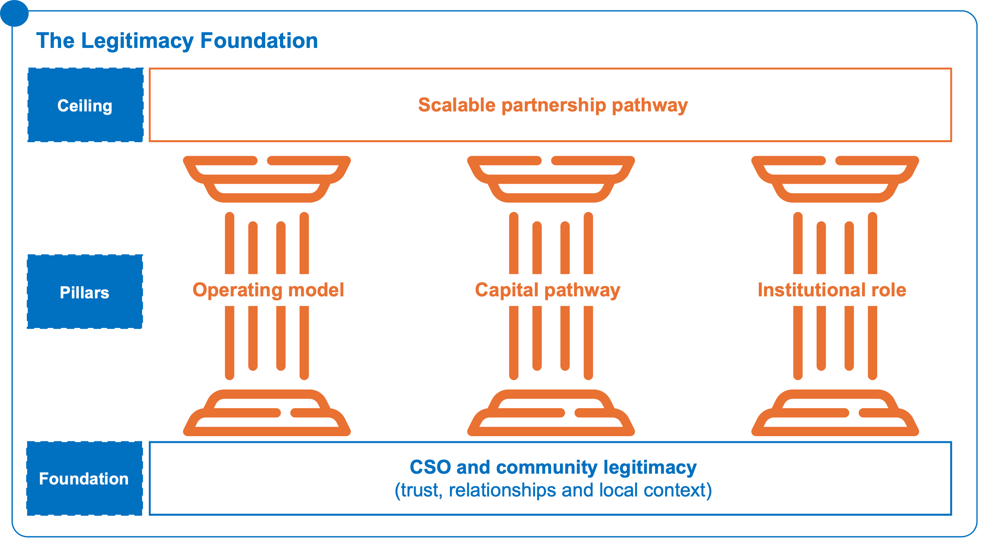
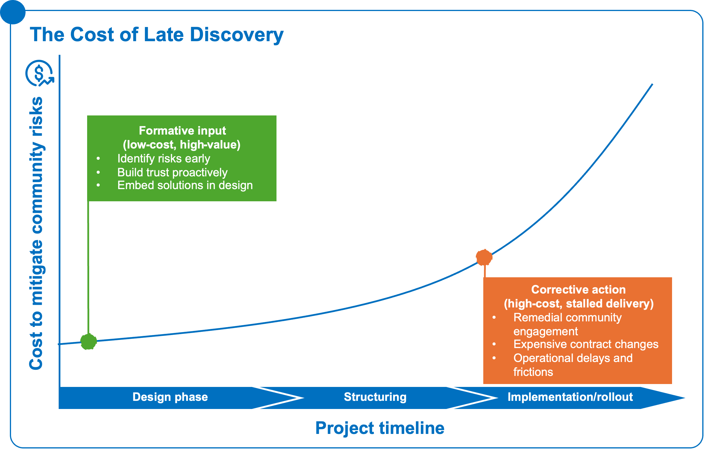
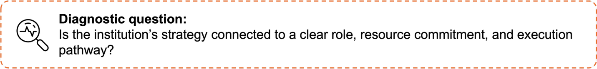
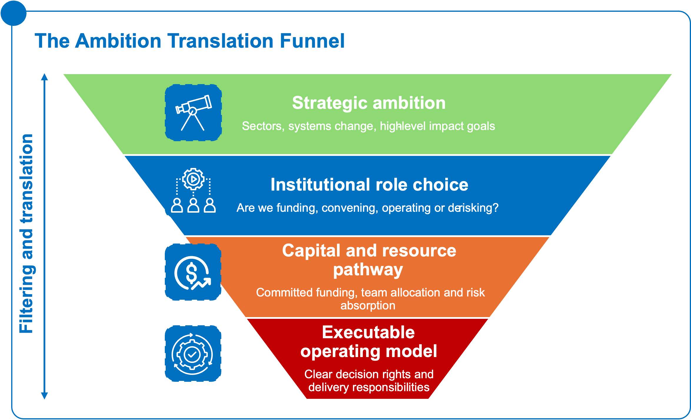
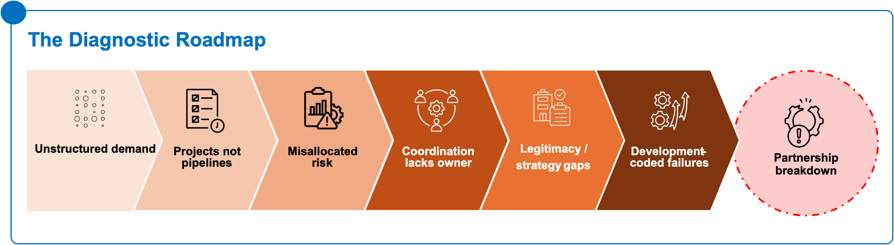
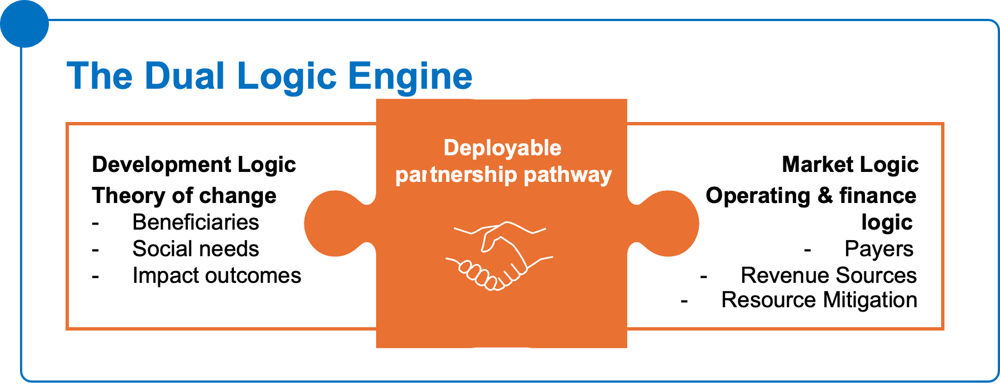
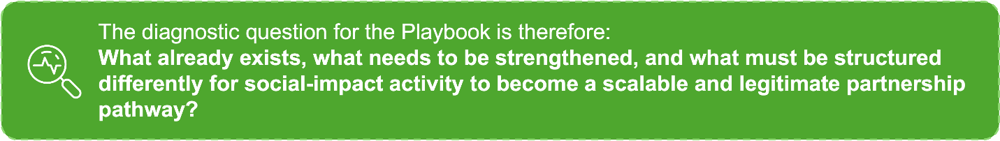
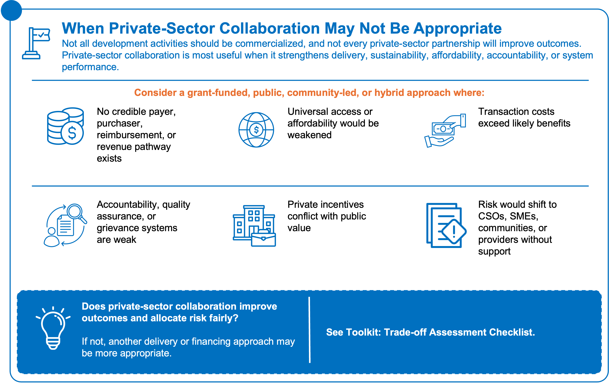

4.1.1 Social demand is visible but not yet structured into bankable demand
Across many sectors, social demand is clear. Communities need reliable services, farmers need access to markets and inputs, patients need affordable care, schools need consistent food supply, and households need dependable energy. CSOs and development actors often understand these needs deeply because they are close to communities and delivery realities.
However, visible need does not automatically become bankable demand.
For private-sector participation to become viable, demand must be connected to a credible payment, purchasing, reimbursement, offtake, or revenue mechanism. The central question is not only who benefits, but also who pays, under what terms, and with what reliability.
This is where many initiatives remain under-structured. A program may demonstrate strong social value, but if payment timelines are uncertain, purchasing commitments are weak, volumes are unpredictable, or repayment sources are unclear, private actors and financiers will struggle to engage.
This does not mean the social demand is less important. It means the pathway from social demand to sustainable delivery must be made more explicit.
Typical symptoms include:
- high community need, but no clear payer or purchaser;
- demand demonstrated through participation, but not translated into contracted volume;
- public commitments that are policy-based but not budget-backed;
- beneficiaries clearly defined, but clients, payers, or offtakers less clear;
- donor-supported activity with limited path to recurrent revenue or operational continuity.
4.1.2 Project lists are mistaken for pipelines
Many institutions maintain lists of priority projects, Programs, or opportunities. These lists often reflect real needs and strategic priorities. However, a list of opportunities is not the same as an investable pipeline.
A pipeline requires more than identification. It requires preparation, sequencing, documentation, role clarity, risk allocation, implementation readiness, and a credible route to financing or delivery. Without these elements, opportunities remain visible but not actionable.
This distinction is especially important for CSOs, foundations, and development actors seeking to scale existing work. A promising Program may be well known, locally legitimate, and aligned with national or donor priorities, but still not ready for capital or partnership expansion if it has not been translated into an executable structure.
Typical symptoms include:
- many named opportunities, but few with clear preparation status;
- limited feasibility, financial, operational, or legal structuring;
- no clarity on procurement, approval, or implementation steps;
- weak documentation of delivery assumptions and operating costs;
- opportunities dependent on one-off relationships rather than repeatable structures.
4.1.3 Risk is misallocated
Risk is rarely absent from development-private sector partnerships. The problem is that risk is often carried by actors who cannot manage, price, or absorb it.
CSOs may carry delivery, trust, adoption, and reputational risk without the resources to manage scale. SMEs may carry demand, payment, or working-capital risk without adequate buffers. Private investors may be asked to absorb policy, public-payment, or counterparty risk that sits outside their control. Public actors may make commitments without clear fiscal space or implementation capacity. Development actors may intend to de-risk participation, but apply guarantees, catalytic capital, or technical support too late or too generally.
When risk is not allocated deliberately, it surfaces later as delay, withdrawal, underperformance, or loss of trust.
Typical symptoms include:
- private actors expected to enter without payment certainty;
- CSOs expected to scale delivery without operational or financial buffers;
- public actors controlling approvals but not bearing implementation consequences;
- donors funding pilots without addressing the risks that block scale;
- guarantees or de-risking tools introduced after the deal logic has already weakened.
4.1.4 Coordination has no owner
Many partnerships have multiple committed actors but no clear coordinating function. Governments, CSOs, donors, foundations, DFIs, firms, and intermediaries may all be active, yet no one is responsible for moving the opportunity from concept to structure, financing, implementation, and learning.
This is especially common where initiatives grow out of development Programs or social-impact activities. The original Program may have strong delivery logic, but scaling it requires additional actors, financing layers, operational systems, and decision points. Without a clear owner of coordination, the work fragments across institutions.
Coordination failure is not just a process issue. It affects trust, timing, cost, and accountability. It also creates confusion over who has authority to make decisions, who absorbs risk, who manages delivery, and who is responsible when assumptions change.
Typical symptoms include:
- strong interest from multiple actors, but no agreed pathway to execution;
- unclear handoffs between Program design, financing, procurement, and delivery;
- parallel donor or institutional activity with limited alignment;
- no single actor maintaining momentum across decision points;
- accountability gaps when implementation problems emerge.
4.2 Additional lenses for CSOs and institutional actors
The core failure patterns above are common across partnership systems. For CSOs, foundations, donors, and institutional leaders, additional lenses are needed because partnership failure is not only financial or technical. It can also emerge from weak legitimacy, late recognition of community risk, unclear institutional roles, or disconnection between strategy and implementation.
4.2.1 Legitimacy is assumed, not built
Figure 5: Legitimacy first: anchoring operating, capital, and institutional pillars in community trust to reach a scalable pathway.Figure 5: Legitimacy first: anchoring operating, capital, and institutional pillars in community trust to reach a scalable pathway.Many partnership models assume that social acceptance, community trust, and user adoption will follow once a service or product is available. In practice, legitimacy is built over time through relationships, responsiveness, accountability, and credible delivery.

1818CSOs often hold legitimacy that private or public actors cannot quickly replicate. Their relationships with communities, service users, and local systems can be one of the most valuable assets in a partnership. Yet this legitimacy is sometimes treated as background context rather than a core design condition.
If legitimacy is not built into the partnership structure, initiatives may face low adoption, resistance, mistrust, reputational risk, or exclusion of the very groups they intend to serve.
Typical symptoms include:
- community engagement treated as a late-stage activity;
- CSOs included for outreach but not for design or feedback;
- assumptions about uptake that are not tested locally;
- limited grievance or feedback mechanisms;
- weak understanding of social norms, affordability constraints, or trust barriers.
4.2.2 Community risks are surfaced too late
Community-level risks often become visible only during implementation, when they are more expensive and difficult to address. These risks may include affordability barriers, land or access concerns, low trust in providers, gendered participation constraints, local political dynamics, service-quality concerns, or resistance to new delivery models.

Figure 6: Catch risks early or pay later: low-cost design fixes beat high-cost rollout corrections.Figure 6: Catch risks early or pay later: low-cost design fixes beat high-cost rollout corrections.CSOs and community-facing organizations are often well positioned to identify these risks early. However, if they are consulted only after the partnership structure has been designed, their insight becomes corrective rather than formative.
Surfacing community risks early does not slow down partnership development. It improves the quality of preparation and reduces the likelihood of failure during rollout.
Typical symptoms include:
- adoption barriers discovered after launch;
- community concerns not reflected in feasibility or implementation planning;
- social safeguards treated separately from operational design;
- affordability or accessibility issues identified too late;
- weak feedback loops between users and decision-makers.
4.2.3 Strategy and execution are disconnected
Many institutions have strong strategic ambition around private-sector engagement, systems change, market building, or social impact. However, strategic ambition does not automatically translate into executable pathways.
A strategy may identify priority sectors, target groups, or partnership opportunities without clarifying the role the institution should play, the resources required, the partners needed, the risks to absorb, or the pathway from pilot to scale.
This is where institutional leadership matters. Leaders need to decide not only what the institution wants to achieve, but how it should participate in the broader ecosystem. The institution may be best placed to fund, convene, de-risk, advocate, aggregate, operate, strengthen networks, or step back.
Typical symptoms include:
- broad strategic priorities without model choice;
- ambition to partner with the private sector but unclear institutional role;
- fragmented internal teams working across funding, programs, policy, and partnerships;
- no clear link between strategic objectives and capital or operational pathways;
- pilots launched without a pathway to scale or institutional ownership.

4.2.4 Senior ambition is not translated into role choice, capital pathway, or operating model

Figure 7: From vision to delivery: narrowing ambition into roles, capital, and an executable model.Figure 7: From vision to delivery: narrowing ambition into roles, capital, and an executable model.Senior leadership can create momentum, legitimacy, and visibility for partnership efforts. But high-level ambition can also remain abstract if it is not translated into practical decisions. For an initiative to become deployable, leadership ambition must be connected to:
- a defined institutional role;
- a clear partnership structure;
- a credible capital or funding pathway;
- an operating model;
- decision rights;
- implementation responsibilities;
- risk allocation;
- measures of success.
Without this translation, teams may move forward with different assumptions about what the partnership is meant to do and who is responsible for making it work.
Typical symptoms include:
- senior-level endorsement without implementation authority;
- unclear whether the institution is funding, convening, operating, or de-risking;
- capital discussions disconnected from delivery realities;
- role ambiguity between CSOs, public actors, financiers, and private firms;
- no shared view of what success looks like beyond launch.
4.3 Prioritizing the Binding Constraint
The failure patterns and diagnostic lenses described above often appear together, but they do not carry equal weight in every context. A partnership opportunity may face weak payment systems, unclear risk allocation, fragmented coordination, limited preparation, and legitimacy gaps at the same time. The practical task is therefore not only to identify barriers, but to determine which one is most binding.
A binding constraint is the primary issue preventing capital, institutional commitment, private-sector participation, or operational delivery from moving forward. A secondary constraint still matters, but does not explain the main blockage. A symptom is an observable problem, such as weak investor interest or slow implementation, that may point to a deeper issue. An enabling-system weakness is a broader condition, such as weak procurement capacity, poor data systems, or limited regulatory clarity, that shapes whether the partnership can operate at scale.
Prioritization matters because different constraints require different responses. If payer credibility is weak, additional convening will not unlock scale. If preparation is incomplete, guarantees alone will not make the opportunity financeable. If delivery is fragmented, capital may flow inefficiently unless providers, standards, verification, and payment rules are organized. If legitimacy is weak, implementation may fail even where financing is available.
A practical sequencing logic is to ask:
1. Is there a clear demand signal and credible payer, purchaser, reimbursor, offtaker, or revenue source?
2. Is the opportunity sufficiently prepared, and are the main risks identified and allocated to the right actors?
3. Is there a clear coordination owner responsible for moving the opportunity from concept to execution?
4. Are legitimacy, affordability, inclusion, feedback, and accountability built into the operating model?
5. Are the surrounding systems – procurement, payment, data, regulation, verification, and delivery capacity – ready to support scale?


Figure 8: From scattered demand to breakdown: tracing the fault lines where partnerships fail before they scale.Figure 8: From scattered demand to breakdown: tracing the fault lines where partnerships fail before they scale.Model selection should follow this diagnosis. The right model is not selected by institutional preference or familiarity, but by the constraint it is designed to solve. The accompanying Toolkit provides a fuller bottleneck prioritization tool to help users distinguish binding constraints from secondary issues, symptoms, and enabling-system weaknesses.
4.4 Development-coded project failure modes
Development-led and CSO-led initiatives often begin with strong social-impact logic. They may be rooted in deep community relationships, validated needs, trusted delivery systems, and clear theories of change. These are strengths. The challenge is that they are not always expressed in terms that allow private-sector actors, financiers, or institutional partners to understand how scale and sustainability could work.
This section identifies common ways in which promising initiatives remain “development-coded” and therefore harder to translate into commercially viable or investable pathways.
4.4.1 Projects remain framed around need, beneficiaries, or theory of change without clear clients, payers, repayment sources, risk mitigation, or timeline considerations

Figure 9: Connecting the two engines – impact and capital – into one deployable partnership pathway.Figure 9: Connecting the two engines – impact and capital – into one deployable partnership pathway.A strong theory of change can explain why an intervention matters and how it creates impact. However, it does not always explain how the intervention will be financed, who will pay for it, how long repayment or sustainability will take, or which risks must be mitigated.
For partnership with private-sector actors, the theory of change needs to be complemented by an operating and financing logic. This does not replace the social-impact logic. It extends it into questions of delivery, sustainability, and scale.
Translation questions include:
- Who benefits, and who pays?
- Are beneficiaries, users, clients, and payers the same or different actors?
- What is the repayment or revenue source?
- What timeline is realistic for operational or financial sustainability?
- Which risks prevent partners or capital from engaging?
- Which risks should be absorbed by donors, foundations, public actors, or catalytic capital?
- What evidence shows that the model can repeat beyond the initial context?
4.4.2 Social-impact logic remains compelling, but pathways toward operational sustainability, commercial viability, and scalable participation are underdeveloped
Many initiatives demonstrate meaningful impact but remain dependent on project-based funding, individual champions, or context-specific delivery arrangements. This does not diminish their value. It means that additional structuring is needed to understand what would be required for them to sustain, scale, or attract complementary participation.
Operational sustainability may involve stronger delivery systems, clearer cost structures, better coordination, predictable funding flows, or more reliable partners. Commercial viability may involve payment mechanisms, offtake, reimbursement, service contracts, blended finance, or catalytic risk-sharing. Scalable participation may require standardization, aggregation, accreditation, or clearer roles for public, private, and civil-society actors.
Typical symptoms include:
- strong impact evidence but unclear cost recovery or long-term funding;
- delivery depends heavily on one actor or one grant cycle;
- unit costs, operating requirements, or payment flows are not fully visible;
- private actors are interested but cannot see the commercial pathway;
- scale would require systems that are not yet in place.
4.4.3 Inclusion and accountability are treated as safeguards rather than design conditions that affect trust, adoption, bankability, and scale
Inclusion and accountability are often treated as compliance requirements or social safeguards. In practice, they can directly affect whether a partnership works.
If target users cannot access, afford, trust, or benefit from the service, uptake will suffer. If feedback mechanisms are weak, quality problems may persist. If accountability is unclear, trust may erode. If excluded groups are not considered in design, scale may reinforce rather than reduce barriers.
For this reason, inclusion and accountability should be treated as design conditions that influence adoption, delivery performance, legitimacy, and long-term sustainability.
Typical symptoms include:
- inclusion considered after the operating model is already designed;
- accountability mechanisms limited to reporting rather than feedback and response;
- user experience not reflected in payment, service, or delivery design;
- weak grievance or correction mechanisms;
- scale plans that do not test whether underserved groups can access the model.
Closing diagnostic
The purpose of this section is not to suggest that CSO-led or development-led initiatives are weak. In many cases, they hold the very assets that make future partnership possible: trust, delivery knowledge, community relationships, demand validation, and legitimacy.
The issue is that these assets need to be made visible, structured, and connected to the requirements of scale, sustainability, and partnership. Once that translation happens, social-impact activity can become a stronger foundation for private-sector participation, catalytic capital, public collaboration, and repeatable delivery models.

Before moving from diagnosis to actor roles and model selection, users should also test whether private-sector collaboration is appropriate at all.
